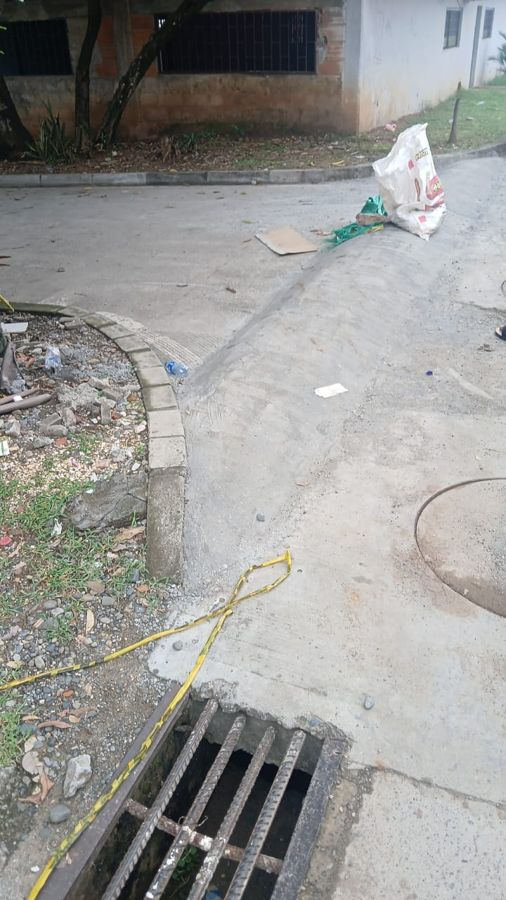

La basura
La sacamos cuando no pasa el carro y la tiramos en cualquier esquina. Después nos quejamos de los gallinazos, las ratas y el mal olor.
Ley 1801 de 2016, art. 111: residuos fuera de horario o en sitio no autorizado.
El padre lo dijo en la misa de la Santísima Trinidad. Ahora lo decimos los vecinos, con nombre y con firma.
Firmar la queja
Esto no es culpa del gobierno de turno ni de "los de otro barrio". Esto lo hacemos nosotros mismos, todos los días, en nuestra propia cuadra.
La sacamos cuando no pasa el carro y la tiramos en cualquier esquina. Después nos quejamos de los gallinazos, las ratas y el mal olor.
Ley 1801 de 2016, art. 111: residuos fuera de horario o en sitio no autorizado.
Su fiesta no es la fiesta de todos. Al otro lado de la pared hay un niño que madruga a estudiar, un trabajador que madruga a ganarse el día y un enfermo que necesita dormir.
Ley 1801 de 2016, art. 33: ruido que afecta la tranquilidad de los vecinos.
Un totazo a la madrugada no es alegría: es susto para los viejos, los bebés y los animales, y una quemadura esperando pasar.
Ley 1801 de 2016, art. 30: uso de pirotecnia sin autorización.
Muchachos: el barrio no es pista. El escape que retumba y el pique entre casas un día se cobran una vida, y puede ser la de ustedes.
Ley 769 de 2002, Código Nacional de Tránsito.
La calle no es de quien la echa el cemento. Un resalto sin estudio tapa el desagüe, inunda al vecino y le cambia la vía a todo el mundo.
Ley 1801 de 2016, art. 140: comportamientos contra el espacio público.
Sea sincero. Nadie más ve lo que marque aquí.
Llene sus datos y la app le arma un derecho de petición formal. La Alcaldía tiene 15 días hábiles para responder por escrito. Entre más vecinos lo manden, más pesa.
Si no tiene el correo oficial, cópiela, imprímala y radíquela en la ventanilla de la Alcaldía. Pida siempre el número de radicado.
Mándelo al grupo de la cuadra, al de la junta y al de la familia. El que se sienta aludido, que se corrija.
Compartir por WhatsApp